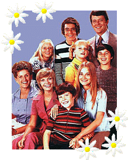

The Toast Point Limerick Contest
Brady Bunch Limericks
Here's the story...of a bunch named Brady...
That squeaky-clean family, the Bradys
Were sent to us straight out of Hades
Their suburban palace
And housekeep named Alice
All serve to make Toast Point a Fraidy!
1998 Entries
Canadian Joe writes 12/22/98
On the surface the Bradys seemed placid,
From a lobotomy point of view, quite candid,
Though agent "Smart" had a shoe phone,
And the castaways a new home,
It's obvious the Bradys were on acid!
The Brady X-Mas was known as the best,
Everyone behaving, even Bobby the pest,
When the paper was ripped,
They all then stripped,
Turning Brady X-Mas to a carnal fuck fest!
Sam and Alice had a sadistic hobby
Which they ultimately worked on Bobby:
Thus the poor lad was sold
For eight ounces of gold
To a sheik's harem in Abu Dhabi.
The poet comments, "Too bad they didn't get Mike that way."
The time Jan, Sam and Mike had a threesome
Caused the others to merc'lessly tease 'em --
Caught i.f.d.* by Carol
Who'd hid in a barrel
On the off-chance she somehow might see some.
The poet comments, "* i.f.d. = in flagrante delicto"
WebCat writes 11/25/98
Is Carol's hair really that flip?
As stiff as her leather whip,
Which she knew how to use,
When Mike begged for abuse
And they'd do the whole S&M trip!
The poet comments, "Viva La Brady bunch!"
WebCat writes 11/21/98
When Sam locked the kids in the freezer
Was it from being a senile old geezer?
Or 'cause Alice was there,
And didn't want them to see
His feeble attempts to please her...!
The poet comments, "Remember,this was in the days before Viagra! "
 Sunday nights, when the kids are in bed,
Sunday nights, when the kids are in bed,
Carol finishes giving Mike head,
And straps on a prosthesis --
Mike cries, "Not again! Jesus...
Can't you stick it to Alice instead?"
The poet comments, "...appropriated from a scene originally intended as a prequel to the gripping, 2-part "Grand Canyon"
episode, but unanimously rejected by all but one of the show's sponsors for being passive-aggressively sympathetic to the
Communist Menace. For additional spin-offs, see "You Must Remember This" in Robert Coover's utterly delightful A Night At
the Movies.
P.S. -- Who you callin' a lawyer?"
Well, billable hours...
Marcia's thoughts will often deprave
To moist visions of being Sam's slave,
In which -- bound, wrists and ankles --
She is corn-holed and spankled
Any time that she fails to behave...
The poet comments, "This is loosely adapted from Chapter 12 of The Marquis DeSade's novel Julianne."
Deep-Goat writes 10/25/98
When Greg's in Hawaii, "Surfs up!"
Till he saw Marcia's triple C cup.
He went back in the water
For his loins had got hotter
Because something had suddenly came up!
Tudymae writes 10/20/98
Carol, whose hair flips straight up
And Alice whose hair's like a mutt's
Went walking the streets,
Flashing their tits,
Till the cop that they flashed picked them up.
The poet comments, "Im sorry, I couldnt help my self."
Mystic01_2001 writes 10/13/98
When Sam locked the kids in the freezer
They said: "Let us out, cuz Greg's a weezer!"
Sam simply replied
(Hand on Alice's thigh):
"Wait 10 minutes, cuz I've got to please her!"
The poet comments, "10 SECONDS is probably more like it!"
The kids' bathroom toilet is missing
So in a jar they'll be pissin'
Now there's nowhere
For Greg and Marsha to share
A QUICKIE when no one is listenin'!
Is Carol's hair really that flip?
Does she use any rollers or clips?
Does it ever get frizzy
When she's in a hissy,
Cuz her and Mike are bumpin' hips?
Greg Brady and coy Laurie Partridge
Were listenin' to an 8-track cartridge,
When she said:"Take me Greg!
Please, don't make me beg!"
He replied to her: "Shut up, and blow, BITCH!"
There once was a family named Brady
The bunch was very degrading
One day in the park
They got ate by a shark
But they were just faking.
The Sage sternly admonishes the poet that rhymes need to be closer than that!
Tim Thompson writes 09/21/98
Said Carol to her step-son Greg,
"Oh please, young stud, don't make me beg!
Your father's a bore,
He goes soft more and more,
And I'm tired of him humping my leg."
Deep-Goat writes 07/15/98
When Marcia embraced Davy Jones
For kicks and a couple of moans
She laughed with delight
When first she caught sight
Of "Peter Tork" tattooed on his bone.
The poet comments, "Peter was asking for it."
The kids' bathroom toilet is missing
'Cause the kids were to scared to be pissing
With a permed faggot named Mike
And a maid who's a dyke
Tiger was wise to go missing!
Now Greg had some problems, I'm confessin'
And Carol thought she'd teach him a lesson
When he pulled out his shaft
And shoved it in aft
He make sure it was covered with Wesson!
Bilzzz writes 07/05/98
While Alice made dinner that night
Greg and Peter got into a fight
Greg said, "Now wait -
I'll handle this debate"
And went and fucked Tiger outside!
JT writes 05/21/98
Is Alice a bulldyke or what?
Her attitude doesn't say "hot".
But give Sam a chance,
That bulge in his pants
Is meat for dear Alice's twat!
When Marcia embraced Davy Jones
Their pelvis' touched bone to bone.
She screamed in delight
As they fucked left and right
Now Marsha sports Madonna cones!
The poet comments, "send me money please. no, im serious. my brother nikki
was born without intestines and its a hell of a lot of money to pay for treatment. Thanx.
luv
Isabel writes 04/01/98
There once was a family named Brady
With Carol the wife, but no lady.
Off the screen she would flirt,
In a tight miniskirt,
With Greg, her screen son, in the shade-y.
Lars writes 03/11/98
When Sam locked the KIDs in the FREEZER
For Alice (he was trying to please her)
Cried Alice "Oh, dear,
Sam, what did you hear?
I want your meat HID in my SQUEEZER!"
To the 1999 Brady Bunch Limericks!
To the 1997 Brady Bunch Limericks!
To the 1996 Brady Bunch Limericks!
To the 1995 Brady Bunch Limericks!
Back to the Toast Point Limerick Contest!
Back to the Toast Point Page!